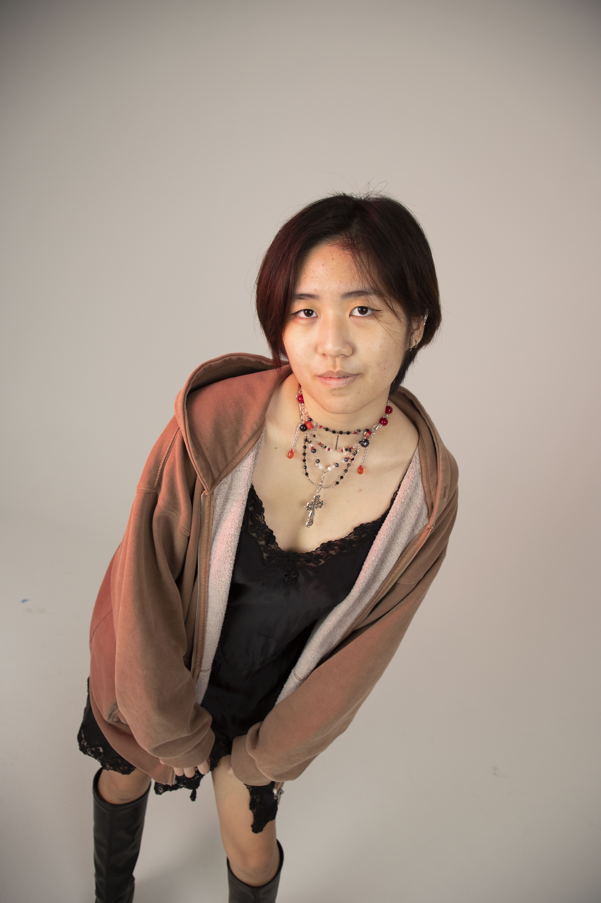

 |
Name: Stephanie Han |
I am interested in both the front end and back end of design. My main hobbies are:
Although I am pursuing a career in Design, I have a background in 3D Printing, Laser Cutting, and Microcontrollers from being in Infocomm Club in Secondary School. My strengths are building and designing but my weaknesses are programming in C++ and physics/circuits.
I am profficent in Photoshop, Illustrator, HTML, CSS, Python and some Javascript.